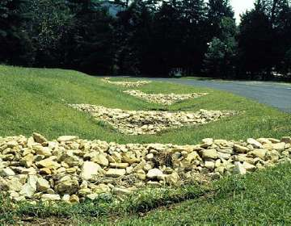

Check Dams
What is it?
Check dams are small dams/mounds constructed from gravel, other rock material, or sometimes straw. Check dams are built in upland drainage areas with high runoff velocities (these structures should not be used in streams). The primary function of check dams is to slow runoff velocities and capture sediment.

(photo from Virginia Department of Conservation and Recreation Stormwater Management Program)
Conservation Benefits
- Captures sediment and other particulates in runoff reducing the amount that enters streams
- Reduces runoff velocities from upland habitats preventing site erosion
What does it include?
Check dams are typically constructed in naturally occuring drainage areas at construction sites or in urban areas. The material selection, structure size, spacing, and number needed will depend on the site and amount of runoff expected. Materials commonly used include gravel, small rip-rap rock, and straw. After several storm events, sediment accumulation above the check dam and will need to be removed for continued effectiveness. Erosion contol blankets are used in conjunction with check dams to prevent erosion between the structures.
Check Dam Links
- Check dam (p. 6; TCEQ)
- Check dam (VT Soil Erosion & Consultancy)
- Check dams (Island County Public Works and Washington State Dept Ecology)
- Check dams (p 62; City of Portland Oregon)
- Erosion control BMPs; ditch checks (City of St. Cloud, Minnesota)
- Rock check dam fact sheet (NRCS)
- Rock check dams (Virginia Department of Forestry)
- Stone check dams (p 8; New Hampshire Department of Transportation)
- Stone check dams (p 55; New Hampshire Dept of Resource and Economic Development)
Check Dam Bibliography
- Remaitre et al. 2008. Influence of check dams on debris-flow run-out intensity. Natural Hazards and Earth System Sciences 8: 1403-1416.